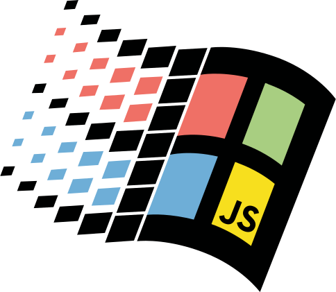

OS-GUI.JS
OS-GUI.js is a JavaScript and CSS library for creating operating system-like user interfaces. The default theme is an accurate recreation of Windows 98's appearance.
You can find the source code and docs on GitHub. This page also acts as documentation. You may want to view this page's source code.
MenuBar
The MenuBar component is an application menu bar.
It supports command menu items, checkbox menu items, and submenus.
It works with screen readers, and is keyboard/mouse/touch accessible.
You can jump to menu items by pressing the first letter of the item's label, or if defined, an access key.
Access keys are defined in the item's label by putting an ampersand (&) before the letter.
Application Window
Application windows are windows that can be dragged around, closed, minimized, and are usually resizable and maximizable.
Windows 98's flying titlebar animation is implemented for maximizing, minimizing, and restoring.
Even without defining a taskbar, app windows can be minimized. It works similarly to how it does in Windows 98 if you end the Explorer task.
Tool Window
Tool windows have a smaller titlebar, and are generally not resizable, maximizable, or minimizable. They share their focus with the application window they're in, at least visually.
Tool windows that have no parent window are shown as focused as long as the browser window is focused. This is useful for web applications where the browser window takes the place of the application window.
Combined Application Example
This example shows an app window with a tool window and a menu bar.
The tool window shares focus with the parent app window, and always stays on top of it's parent.
Tip: Remember to listen for the closed event on the application window
to close any tool windows.
Right-To-Left Support
OS-GUI supports right-to-left languages with a flipped layout. Keyboard navigation is flipped appropriately (for entering/exiting submenus).
You can specify the standard HTML attribute
dir="rtl"
or CSS property
direction: rtl
to control the layout direction.
Buttons
You can go bananas with buttons!
Come on down to Isaiah's Button Emporium, we've got all the buttons, we've got gray buttons... and... more-gray buttons!
Tip: You should use verbs for button labels when possible. For demo purposes, labels here describe the button type.
<button>Basic button</button> |
A normal command button. | |
<button disabled>Disabled button</button> |
Use the standard disabled attribute to mark buttons as disabled. |
|
<button class="default">Default button</button> |
The default action that will be triggered if you hit Enter. The default should change to whatever button you tab to, or if you tab to another control in a form, return to the original default button. | |
<button class="toggle selected" aria-pressed="true">Toggle button</button>
|
Add the selected class to show the button as pressed.
Include the toggle class to make it a toggle button.
You should also provide aria-pressed or aria-expanded attributes
as appropriate.
Examples: Start button, taskbar buttons, List/Details buttons in file open/save dialogs.
Tool buttons in Paint look a bit different.
|
|
<button class="lightweight" tabindex="-1">Lightweight button</button>
|
No border until hover. Used for menu and toolbar buttons. Generally not focusable. | |
<button class="lightweight" disabled tabindex="-1">Lightweight disabled</button>
|
Use the standard disabled attribute to mark buttons as disabled. |
Scrollbars
Scrollbars are automatically styled in webkit-based/blink-based browsers (Chrome/Chromium/Opera/Edge, etc.), but for Firefox you could use OverlayScrollbars or perhaps SimpleBar.
The triangle graphics are rendered dynamically based on the theme colors and --scrollbar-size
CSS variable.
Graphics are prerendered at a default size in each theme's CSS file,
but you can update the graphics with:
applyCSSProperties(renderThemeGraphics(getComputedStyle(element)), {element, recurseIntoIframes: true});
Insets & Outsets
<div class="inset-shallow"></div>
|
Examples: tray in taskbar, status bar sections, tool options in Paint, Length/Position boxes in Sound Recorder | |
<div class="outset-shallow"></div>
|
Examples: lightweight action buttons on hover | |
<div class="inset-deep"></div>
|
Examples: text inputs, content panes for pages in Help Topics or Internet Explorer | |
<div class="outset-deep"></div>
|
Examples: slider handle in Sound Recorder, buttons |
Crazy Animation Demo
Check out the interactive spaceship animation demo
The Kitchen Sink


Anything I want to test ends up in the kitchen sink. There's lots of little applets for testing, like a theme applier.
A Physics Sandbox
PBJ Sandbox is a point-based physics toy where you can build structures out of springy connections. The interface uses os-gui.js, with two custom themes.
A Full Web Desktop
98.js.org is a web-based recreation of the Windows 98 desktop, including Paint, Sound Recorder, Solitaire, and more.
The project that started it all

JS Paint is a detailed clone of MS Paint from Windows 98, with many extra features.